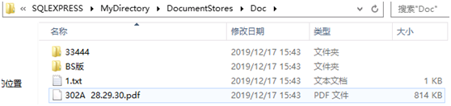
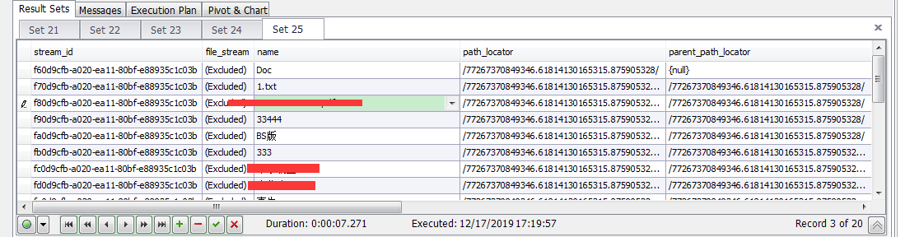

看此文档前，先参考一下文档 https://blog.csdn.net/downmoon/article/details/24374609
环境：阿里云ECS SQL Server 2017 + Delphi7
测试用xcopy，robocopy等命令迁移文件好像不太会用。
倒是可以通过T-SQL的方法，但是需要文件在服务器上面，这就有点难受了。如下：
--我们使用该函数插入一个图片文件到该目录下：这里的路径需要是服务器上的路径。
declare @image1 varbinary(max), @path_locator hierarchyid;
select @image1=cast(bulkcolumn as varbinary(max)) from openrowset(bulk N'C:\1.png', single_blob) as x;
select @path_locator=path_locator from DocumentStores where [name]='MyDir1';
insert into DocumentStores(name, file_stream, path_locator)
values('1.png', @image1, dbo.fnGetNewPathLocator(newid(), @path_locator));
--如果你想使用SQL Server本身提供的hierarchyid层次结构，下面这个函数也许可以帮你：
create FUNCTION fnGetNewPathLocator
(@child uniqueidentifier,
@parent hierarchyid)
returns hierarchyid
as
begin
declare @ret hierarchyid, @binid Binary(16) = convert(binary(16), @child);
select @ret=hierarchyid::Parse(
COALESCE(@parent.ToString(), N'/') +
CONVERT(nvarchar, CONVERT(bigint, SUBSTRING(@binId, 1, 6))) + N'.' +
CONVERT(nvarchar, CONVERT(bigint, SUBSTRING(@binId, 7, 6))) + N'.' +
CONVERT(nvarchar, CONVERT(bigint, SUBSTRING(@binId, 13, 4))) + N'/');
return @ret;
end;通过程序也能实现，只是如果层级太深，生成的path_locator太长，总感觉不太靠谱。
下面是用Delphi实现的，Insert操作(本地E:\Doc目录下所有文件迁移到FileTable)。
procedure TForm1.BitBtn9Click(Sender: TObject);
var
lst, lstContent: TStrings;
I: Integer;
strSQL: string;
begin
lst := TStringList.Create;
lstContent := TStringList.Create;
try
GetFileStructureList('E:\Doc', lst);
strSQL := EmptyStr;
rzprogressbar1.TotalParts := lst.Count;
for I:=0 to lst.Count-1 do
begin
SplitString(lst.Strings[I], '|', lstContent);
if SameText(lstContent.Strings[0], '0') then //目录
strSQL := strSQL + Format('Insert into DocumentStores(name, path_locator, is_directory, is_archive) values(%S, %S, %D, %D);',
[QuotedStr(ExtractFileName(lstContent.Strings[1])), QuotedStr(lstContent.Strings[2]), 1, 0]) + #13#10
else if SameText(lstContent.Strings[0], '1') then //文件
strSQL := strSQL + Format('Insert into DocumentStores(name, path_locator, file_stream) values(%S, %S, %S);',
[QuotedStr(ExtractFileName(lstContent.Strings[1])), QuotedStr(lstContent.Strings[2]),
StrToHex(BaseEncodeFile(lstContent.Strings[1]))]) + #13#10;
rzprogressbar1.PartsComplete := rzprogressbar1.PartsComplete + 1;
Application.ProcessMessages;
end;
try
ADOConnection1.Connected := True;
ADOConnection1.BeginTrans;
ADOQuery1.SQL.Text := strSQL;
ADOQuery1.ExecSQL;
ADOConnection1.CommitTrans;
except
ADOConnection1.RollbackTrans;
end;
finally
lst.Free;
lstContent.Free;
end;
end;
//下面是公用单元
unit U_Commfunc;
interface
uses
Windows, Messages, SysUtils, Variants, Classes, Graphics, Controls, Forms,
Dialogs, EncdDecd, Contnrs;
//生成filetable用的path_locator
function GetPathLocator(root: Boolean=True): string;
function GetGUID: string;
function StrToHex(AStr: string): string;
//文件转字符串流
function BaseEncodeFile(fn: TFileName): string;
procedure SplitString(Source,Deli:string; var lst :TStrings);
//获取目录+文件的列表 返回值是文件的个数，顶层为选择的目录 为filetalbe插入用
function GetFileStructureList(Path: PChar; var lst: TStrings): LongInt;
implementation
function GetGUID: string;
var
LTep: TGUID;
sGUID: string;
begin
CreateGUID(LTep);
sGUID := GUIDToString(LTep);
sGUID := StringReplace(sGUID, '-', '', [rfReplaceAll]);
sGUID := Copy(sGUID, 2, Length(sGUID) - 2);
Result := sGUID;
end;
function GetPathLocator(root: Boolean): string;
var
//LocatorPath的三个组成部分 S1,S2,S3;
sGuid, S1, S2, S3: string;
begin
Result := '';
if root then
Result := '/';
sGuid := GetGUID;
S1 := IntToStr(StrToInt64(StrToHex(Copy(sGuid, 1, 6))));
S2 := IntToStr(StrToInt64(StrToHex(Copy(sGuid, 7, 6))));
S3 := IntToStr(StrToInt64(StrToHex(Copy(sGuid, 13, 4))));
Result := Result + S1 + '.' + S2 + '.' + S3 + '/';
end;
function StrToHex(AStr: string): string;
var
i : Integer;
ch:char;
begin
Result:='0x';
for i:=1 to length(AStr) do
begin
ch:=AStr[i];
Result:=Result+IntToHex(Ord(ch),2);
end;
end;
function BaseEncodeFile(fn: TFileName): string;
var
ms: TMemoryStream;
ss: TStringStream;
str: string;
begin
ms := TMemoryStream.Create;
ss := TStringStream.Create('');
try
ms.LoadFromFile(fn);
EncdDecd.EncodeStream(ms, ss); // 将ms的内容Base64到ss中
str := ss.DataString;
str := StringReplace(str, #13, '', [rfReplaceAll]); // 这里ss中数据会自动添加回车换行，所以需要将回车换行替换成空字符
str := StringReplace(str, #10, '', [rfReplaceAll]);
result := str; // 返回值为Base64的Stream
finally
FreeAndNil(ms);
FreeAndNil(ss);
end;
end;
procedure SplitString(Source,Deli:string; var lst :TStrings);
var
EndOfCurrentString: Integer;
begin
if lst = nil then exit;
lst.Clear;
while Pos(Deli, Source)>0 do
begin
EndOfCurrentString := Pos(Deli, Source);
lst.add(Copy(Source, 1, EndOfCurrentString - 1));
Source := Copy(Source, EndOfCurrentString + length(Deli), length(Source) - EndOfCurrentString);
end;
lst.Add(source);
end;
function GetFileStructureList(Path: PChar; var lst: TStrings): LongInt;
var
SearchRec: TSearchRec;
Found: Integer;
TmpStr, TmpLocator: string;
CurDir, DirLocator: PChar;
DirQue: TQueue;
C: Cardinal;
begin
Result := 0;
if lst = nil then exit;
dirQue := TQueue.Create;
try
CurDir := Path;
DirLocator := PChar(GetPathLocator());
lst.Add('0|'+CurDir+'|'+DirLocator);
while CurDir <> nil do
begin
//搜索后缀，如：c:\*.*;
TmpStr := IncludeTrailingPathDelimiter(curDir)+'*.*';
Found := FindFirst(TmpStr, faAnyFile, SearchRec);
while Found = 0 do
begin
C := GetFileAttributes(PChar(IncludeTrailingPathDelimiter(curDir) + SearchRec.Name));
//if (searchRec.Attr and faDirectory)<>0 then //这个貌似有问题/
if (C and FILE_ATTRIBUTE_DIRECTORY)<> 0 then
begin
if (SearchRec.Name <> '.') and (SearchRec.Name <> '..') then
begin
TmpStr := IncludeTrailingPathDelimiter(curDir)+SearchRec.Name;
TmpLocator := GetPathLocator(False);
TmpLocator := DirLocator + TmpLocator;
lst.Add('0|'+TmpStr+'|'+TmpLocator);
DirQue.Push(StrNew(PChar(TmpStr)));
DirQue.Push(StrNew(PChar(TmpLocator)));
end;
end else begin
Result:=Result+1;
TmpLocator := GetPathLocator(False);
TmpLocator := DirLocator + TmpLocator;
lst.Add('1|'+IncludeTrailingPathDelimiter(curDir)+SearchRec.Name+'|'+TmpLocator);
end;
found:=FindNext(SearchRec);
end;
{当前目录找到后，如果队列中没有数据，则表示全部找到了；
否则就是还有子目录未查找，取一个出来继续查找。}
if DirQue.Count > 0 then
begin
CurDir := DirQue.Pop;
DirLocator := DirQue.Pop;
end else begin
CurDir := nil;
DirLocator := nil;
end;
end;
finally
dirQue.Free;
end;
end;
end.效果图如下，目录加文件共计20个。
本地文件夹E:\Doc：
FileTable虚拟目录文件Doc：

数据库表中存放数据：
